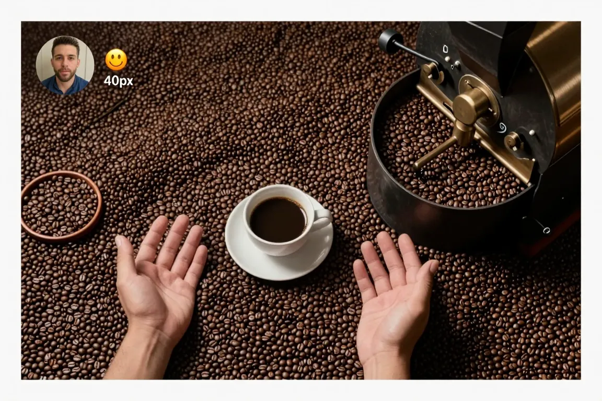

веб · 2022–now · также: Вид BeReal, Фото с передней и задней камеры, Запоздалое фото
Один пост из двух фото одного момента: задняя камера заполняет кадр, а фронтальная стоит в маленькой врезке. Временная метка и отметка опоздания показывают, что это не планировалось.

Главная идея
Доказательство настоящего момента: две камеры срабатывают разом, правки нет, а отметка опоздания показывает, что автор ничего не ставил.
Принципы дизайна
Снимайте оба фото в одном 2-секундном окне: задняя камера заполняет кадр, фронтальная заполняет врезку.
Ставьте врезку в левый верхний угол шириной 28% кадра, с белой рамкой 2px и радиусом 12px.
Не допускайте фильтров, кропа и правки: оставляйте сырой цвет и шум телефона.
Показывайте под фото временную метку вроде «14:32» и отметку опоздания вроде «опоздал на 2 ч» моноширинным шрифтом 12px.
Ставьте страницу на чисто чёрный (#0B0B0B), чтобы весь цвет нёс снимок.
Ограничьте подпись 1 строкой не длиннее 40 знаков, белой.
Показывайте друзей списком по времени, по одной плитке на человека, с размытием на ещё не открытых плитках.